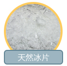
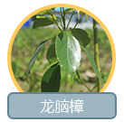
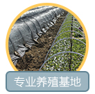
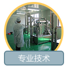

关于我们ABOUT US
博莱尼奥科技有限公司，成立于2014年，一直在奋斗的新生企业。
博莱尼奥科技有限公司，成立于2014年，注册资本8500万元人民币。公司位于国家级工业园区内——宜兴经济技术开发区，紧临宁杭、锡宜高速公路、新长铁路和芜申大运河，地理位置优越，水陆交通便捷。
公司主要从事天然冰片及龙脑油/精油的研发、生产、加工、销售、技术服务、技术转让，以及中药材的培育、种植等。公司拥有现代化粗提车间、一万级洁净GMP车间800平，生产车间及设备工艺完全采用自主设计、定制的萃取设备（已取得实用新型专利），利用先进物理萃取技术（已申请发明专利）提取天然冰片，生产过程中不采用有害制剂。该技术可提高产品纯度10%以上，把水分离的同时还可提高精油纯度到90%以上。较传统技术，萃取时间缩短了一半，得率提高10%，耗能降低65%，运用蒸汽可减少废水排放99%。
公司历经七年的培育栽培驯化，优选出了真正适应本地区生长的‘天龙1号’ 龙脑樟，并取得了江苏省《林木良种证》，填补了江苏地区的空白。自主拥有6000余亩原料种植基地，依太湖而建，地处灵山大佛对面，生态环境优美，为原料的供应提供了坚实的基础。
2015年，公司与无锡济民可信山禾药业股份有限公司建立合作关系，联合北京大学、天津中医药大学、中国药科大学、江苏省药检所等院校机构共同进行2015年度中药标准化项目的研究，承担子项目“冰片生产种植规范和标准制定研究”的系列工作。
目前，公司自主研发并已拥有完整的龙脑樟快速繁育、高纯度天然冰片提炼萃取全产业链上的关键技术，形成了龙脑樟（天然冰片）繁、育、提一体化的产业链，集合了土地、快速育苗、提炼萃取等完整的资源及技术，致力于打造我国唯一的完整天然冰片生态链。
公司理念——博莱尼奥，质的转变。
品质追求——博莱尼奥，品行天下。
服务宗旨——博莱尼奥，求真务实
   
我们只做优质天然冰片（右旋龙脑）、龙脑精油供应商。【天然冰片、龙脑精油】
公司自主培育良种，历经七年终有所成，取得江苏省林木良种证书。【“天龙1号”龙脑樟】
公司自主拥有6000余亩原料种植基地，依太湖而建，面朝灵山大佛，生态环境优越。【种植基地】
公司拥有现代化生产车间、GMP车间，所有设备及工艺完全自主设计、定制。【生产基地】